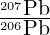

Geochronology of Taung and other southern African australopiths
Pieter Vermeesch
University College London, Gower Street
London WC1E 6BT
p.vermeesch [at] ucl.ac.uk
Philip Hopley
Birkbeck, University of London, Malet Street
London WC1E 7HX
p.hopley [at] ucl.ac.uk
Nick Roberts
British Geological Survey, Keyworth
Nottingham NG12 5GG
nirob [at] bgs.ac.uk
Randall Parrish
University of Portsmouth
Portsmouth PO1 3QL
randall.parrish [at] port.ac.uk
January 29, 2025
Abstract
One century after the Taung juvenile’s discovery, its age and that of many other southern
African australopiths remains unknown. This lack of accurate geochronological constraints
leaves important questions unanswered, including the temporal relationship between the South
African fossil sites and their well dated eastern African counterparts. Previous age estimates
for the Taung fossil range from 942 ka to 3.03 Ma. Radiometric age estimation is difficult in
the absence of the volcanic marker beds that are so useful in eastern Africa. The advent
of carbonate U–Pb geochronology has been heralded as the long-awaited solution to this
conundrum. However, some notes of caution are necessary, because the 206Pb/238U isochron
method requires correction for any initial 234U/238U disequilibrium. In the case of southern
African carbonates, this correction sometimes exceeds 50%. We show that, beyond ~ 1.5 Ma,
the uncertainty of the disequilibrium correction may exceed the correction itself, degrading
the value of the 206Pb/238U method. We propose the 207Pb/235U method as an alternative
to the 206Pb/238U method, because it is largely unaffected by initial disequilibrium. We use
this alternative U–Pb dating approach to obtain a new minimum age estimate for the Taung
juvenile, by analysing a flowstone situated above, and in stratigraphic succession with, the
fossil-bearing deposit. The uncorrected 206Pb/238U isochron age for the sample is 3.30±0.12 Ma.
Disequilibrium correction lowers this value to 2.05 + 0.11∕ - 0.08 Ma, a correction of 40%.
The 207Pb/235U isochron age of 2.982 ± 0.057 Ma is close to the uncorrected 206Pb/238U
age. Unfortunately, the two age estimates do not overlap within uncertainty. We attribute
this disagreement to open system behaviour of the uranium in the sample, which leads to
an overestimation of the 234U/238U disequilibrium correction and an underestimation of the
207Pb/235U isochron age. Consequently, the 207Pb/235U isochron age of ~ 3 Ma is a minimum
age estimate for the flowstone and for the Taung juvenile, placing both firmly in the Pliocene
epoch. Disappointingly, LA-ICP-MS screening of borehole samples below the Taung discovery
site have not yielded any further datable carbonates. Therefore, we have not been able to pair our
minimum age estimate with an equally robust upper age bracket. The search for this additional
age constraint continues.
1 Introduction
The scientific importance of the Taung juvenile (hereafter Taung) can hardly be overstated. It is the
holotype of Australopithecus africanus and provided the first evidence for Charles Darwin’s assertion that
humans evolved in Africa (Dart, 1925). But despite its importance and 100 years of research, the age of
the fossil is frustratingly poorly constrained. This is due to a combination of at least five
reasons:
The Plio-Pleistocene geochronology conundrum. The Plio-Pleistocene falls in an awkward
‘dating gap’ between young events (< 50ka) that can be dated with radiocarbon, and older parts of the
geologic timescale (> 5Ma), where long-lived radionuclides such as 238U and 40K can be routinely used
(Isaac, 1975).
Nevertheless, the burgeoning field of Quaternary geochronology has produced a number of
breakthrough technologies that generate robust Plio-Pleistocene age constraints. Arguably the most
successful of these techniques is 40Ar/39Ar-dating of volcanic ash. This method has provided precise and
accurate time constraints on human evolution in eastern Africa (Deino et al., 2023). Unfortunately, it is
not applicable to southern Africa, for reasons we discuss.
Geological setting. Famous eastern African hominin discovery sites, such as the Omo-Turkana Basin
and Olduvai (now Oldupai), are situated in the eastern African rift system (EARS), an area of active
volcanism. This geological setting creates the ideal conditions for accurate chronostratigraphy.
Many eastern African hominin fossils are found in fluviolacustrine deposits intercalated with
volcanic ash layers amenable to K–Ar and 40Ar/39Ar dating (Leakey et al., 1961; Deino
et al., 2023).
Unfortunately, the EARS terminates in Malawi and no recent volcanic activity is found south of that.
Therefore, the 40Ar/39Ar method is not applicable to southern African hominins and other, less
straightforward techniques must be used.
Whereas eastern African hominin fossils are generally found in siliciclastic deposits, many southern
African specimens were discovered in carbonate lithologies (caves and tufa deposits). Until recently, the
two dominant techniques to determine the age of these rocks were terrestrial cosmogenic nuclide (TCN)
geochronology of siliciclastic cave fill (e.g., Partridge et al., 2003; Granger et al., 2015; Kramers and
Dirks, 2017; Granger et al., 2022) and Th/U disequilibrium dating of speleothems, or of the
fossils themselves (e.g., Vogel and Partridge, 1984; Grün and Stringer, 2023). The Th/U
disequilibrium dating method has an age limit of ~ 500ka and is sensitive to U-migration, which
can be triggered by changes in redox state (Tobias et al., 1993; Ivanovich, 1994). In recent
years, the carbonate U–Pb method has gained significant popularity as a replacement for
TCN and Th/U disequilibrium dating (Walker et al., 2006; Dirks et al., 2010; Pickering
et al., 2019).
Inconsistent results. Unfortunately, the U–Pb results are inconsistent with previously
obtained TCN dates. Whereas the TCN dates of southern African australopiths are similar to the
ages of their eastern African counterparts, their U–Pb dates are systematically younger by
~1 Ma (Section 2). Complex sedimentological arguments have been developed to reconcile
these differences, either by arguing that the cosmogenic nuclide dates are too old (Kramers
and Dirks, 2017), or that the U–Pb dates are too young (Bruxelles et al., 2019; Granger
et al., 2022).
Unknown discovery location. The previous three problems apply to all southern African hominins.
The situation is further complicated for Taung because the exact location of its discovery is unknown. The
skull was found by a quarry worker (‘Mr. de Bruyn’; Tobias, 1984, 2000) in the Buxton-Norlim
limeworks. By the time its scientific value was recognised, the quarrying had progressed beyond the
discovery site. Quarrying continued until until the 1970s, removing most geological evidence except for
two ‘pinnacles’ that were left standing near the discovery site thanks to the foresight of the quarry
manager.
These pinnacles were named after Raymond Dart (the anatomist who recognised that Taung was a
hominin and not a baboon) and Aleš Hrdlička (who carried out an early expedition to Taung in 1925).
Our current understanding of the Taung stratigraphy is mostly based on the Dart and Hrdlička pinnacles
and the shallow subsurface beneath them.
Geographic isolation. In the absence of reliable radiometric age constraints, biostratigraphic
correlations with other hominin discovery sites offer an alternative approach to constraining geologic time.
Unfortunately, such correlations are difficult for Taung, not only because its stratigraphic context is
poorly preserved (see the previous point), but also because the site is geographically isolated from other
hominin discovery sites. Taung is located near the edge of the Kalahari desert in the present day and it
experiences more arid conditions than the Cradle of Humankind. If similar climatic and ecological
gradients were present in the Plio-Pleistocene, they may complicate biological correlations between these
two regions (McKee, 1993).
The coincidence of the above five problems explains why the age of Taung is so poorly constrained,
with estimates ranging from 1 to 3 Ma. Section 3 will review these existing estimates and will explain in
more detail why none of them are entirely reliable. Section 4 will review the carbonate U–Pb dating
method, which has been proposed as a potential solution to the southern African hominin dating
conundrum (Woodhead and Pickering, 2012). We will show that this technique has issues of its own,
which lead us to conclude that the accuracy and precision of several published hominin dates has been
overestimated.
Fortunately, there is hope for a better solution. Section 5 will advocate the 207Pb/235U method as a
more accurate approach to U–Pb geochronology than the established 206Pb/238U method. We will use this
new flavour of U–Pb geochronology to obtain a robust minimum age estimate for Taung of ~ 3Ma. The
new estimate is considerably older than the disequilibrium-corrected 206Pb/238U age, and closer to the
ages of broadly-equivalent eastern African australopiths than other southern African hominin age
estimates (Section 2).
2 Wider context: conflicting chronologies for Australopithecus
Australopithecus in southern Africa is represented by at least two endemic species, Australophithecus
africanus and Australopithecus sediba; the latter is known from palaeokarst locality Malapa, dated by
U–Pb methods and magnetostratigraphy to 2.0 Ma (Pickering et al., 2011). Australopithecus africanus is
known from four localities: Sterkfontein, Gladysvale, Makapansgat, and Taung.
Australopithecus africanus material has been retrieved from Sterkfontein Members 2 and 4;
sediment from Member 2 has been dated to 3.67 ± 0.16 Ma (Granger et al., 2015) and from
Member 4 to between 3.6 and 3.4 Ma (Granger et al., 2022) using cosmogenic 10Be/26Al
burial dating. These dates conflict with flowstone U–Pb ages of ~2.2 Ma from Member 2
(Walker et al., 2006; Pickering et al., 2019) and 2.8–2.0 Ma from Member 4 (Pickering and
Kramers, 2010; Pickering et al., 2019); some explain this discrepancy by arguing that two-stage burial
processes have produced excessively old cosmogenic ages (Kramers and Dirks, 2017); others have argued
that the flowstones are stratigraphically ‘intrusive’, and post-date the hominin fossils (Bruxelles
et al., 2019).
Australopithecus africanus from Gladysvale (Berger et al., 1993) is represented by two isolated teeth
collected from an ex-situ lime dump and dated to approximately 2 Ma on the basis of biostratigraphic
inference (Berger, 1993). Fossil hominins from Makapansgat, assigned by some to Australopithecus
africanus, (Berger and Hawks, 2019) and others to Australopithecus prometheus (Clarke and
Kuman, 2019) are dated to between 2.5–2.0 Ma using palaeomagnetic and biostratigraphic inferences. A
recent study uses fossil cercopithecid biochronology (Frost et al., 2022) to suggest that there are no
hominin sites in southern Africa older than ~2.8 Ma. This implies that the Sterkfontein Member 2 and 4
cosmogenic isotope ages are incorrect, but does not explain why this might be. Unfortunately, all this
means that presently no Australopithecus africanus fossils are associated with well-accepted and fully
quantitative radiometric ages.
Despite the many chronological uncertainties associated with Australopithecus in southern Africa, it is
often considered necessary to incorporate best-estimate chronological information (first and last
appearance date; FAD and LAD) for Australopithecus africanus and Australopithecus sediba into hominin
evolutionary analyses. Due to the above dating controversies, Australopithecus africanus is either
given a maximum stratigraphic range (e.g. from 3.8 to 2.0 Ma) or a minimum stratigraphic
range (e.g. 3.0 to 2.4 Ma); with many variations existing in the literature (e.g. Wood and
K. Boyle, 2016; van Holstein and Foley, 2022, 2024; Püschel et al., 2021; Mongle et al., 2022).
For Australopithecus sediba, with just one geological horizon available, the FAD and LAD
are identical, and a number of statistical approaches are available to take this stratigraphic
and sampling uncertainty into account (e.g. Hopley and Maxwell, 2022; van Holstein and
Foley, 2024).
When the full age uncertainty is considered (3.8 to 2.0 Ma), Australopithecus africanus has the longest
stratigraphic range of all fossil hominins, with the possible exception of Homo erectus (e.g. Wood and
K. Boyle, 2016). This stratigraphic range exceeds that of the combined Australopithecus anamensis
(4.2–3.9 Ma) and Australopithecus afarensis (3.7–3.0 Ma) anagenetic pairing, a far more abundant and
well-dated collection of fossils. Either Australopithecus africanus was an unusually long-lived species, or
poor dating accuracy and precision have resulted in an artificially expanded stratigraphic
range.
With the exception of the single occurrence of the enigmatic Australopithecus garhi at 2.5 Ma (Asfaw
et al., 1999) from the Bouri Formation of Ethiopia, the youngest occurrence of Australopithecus outside
of South Africa is Australopithecus afarensis at 3.0 Ma from Hadar, Ethiopia (Alemseged et al., 2005). If
the southern African australopiths are indeed younger than 3.0 Ma (as suggested by the most recent
biostratigraphic inferences of Frost et al., 2022), then this represents a relict population
following eastern African extirpation. An equally plausible scenario is that southern African
and eastern African Australopithecus are broadly contemporaneous (from 4.0 to 3.0 Ma),
as implied by the cosmogenic isotope ages of Granger et al. (2022), and that the current
U–Pb and electron spin resonance (ESR) age estimates from southern Africa are too young
(Figure 1a).
In a first attempt to reconcile the differences between the cosmogenic burial dates and the
carbonate U–Pb dates, we re-calculated the latter from the raw isotopic ratio data reported in
the literature (see Section 4 for further details about these calculations). We managed to
reproduce the dates but not their uncertainties. We found that the isochron dates reported in the
literature do not take into account the excess scatter that characterises many of the U–Pb
isochrons. The most extreme example of this is shown in Figure 1b for sample M6 of (Pickering
et al., 2019). This sample is characterised by excess scatter 28 times the size of the analytical
uncertainties. Inflating the uncertainty of the uncorrected U–Pb isochron age accordingly, removes the
disagreement between the cosmogenic dates and the U–Pb dates for some samples, but not for all of
them.
3 Previous age estimates for Taung
3.1 Geological context
There are two faunal assemblages present within the Taung Type Site: the ‘Dart Deposits’ (D-A to D-E)
exposed by excavations at the southern base of the Dart pinnacle (McKee, 2016) and the
‘Hrdlička Deposits’ (H-A to H-D) exposed on the top and southern face of the Hrdlička pinnacle
(Hrdlčka, 1925; McKee and Tobias, 1994). Based on distinct vertebrate fossil assemblages and
stratigraphic relationships, most studies recognise the two deposits as temporally distinct, with the Dart
Deposits being older than the Hrdlička Deposits (McKee and Tobias, 1994; McKee, 2016; Frost
et al., 2022). Furthermore, the Dart Deposits are consistently identified as the likely location of the
Taung fossil (Tobias et al., 1993; McKee, 2016; Hopley and Kuhn, 2022). Most researchers, including
Dart, have considered Taung to have been deposited within cave sediments formed within, or
contemporaneously with, the Thabaseek tufa (e.g. Peabody, 1954; Tobias et al., 1993; McKee, 2016).
However, recent reanalysis of the sedimentology and stratigraphy has indicated a more complex picture of
palustrine and palaeosol environments within the Dart Deposits (Hopley et al., 2013; Kuhn
et al., 2015; Parker et al., 2016) and the presence of cave/fissure sediments and speleothems in the
Hrdlička Deposits (Hopley and Kuhn, 2022, see Environments Chapter). Due to the secondary nature
of cave deposits, it is clear that the speleothems of the Hrdlička Deposits are the youngest
sediments of the Taung Type Site and represent a minimum age constraint for the Taung
fossil.
3.2 Biostratigraphy
Biostratigraphic age estimates rely on external independent sources of chronological information, ideally
well-established radiometric ages. Prior to the first radiometric age estimates from the Cradle of
Humankind (Partridge et al., 2003; Walker et al., 2006), biostratigraphic inferences relied upon faunal
correlation with eastern African fossils assemblages associated with 40Ar/39Ar dated volcanic rocks. This
approach was limited by the assumption that the FADs and LADs of species or genera are
shared across distinct biogeographic regions, and because assigned ages are approximate and
difficult to verify. Using this approach (McKee, 1993) gave the fauna from the Taung site a
biostratigraphic age estimate of 2.8–2.6 Ma. After the publication of U–Pb flowstone ages from
multiple southern African caves sites, Pickering et al. (2019) and Frost et al. (2022) were
able to use radiometric ages from within the southern African faunal province to reduce the
biogeographic uncertainties of their biostratigraphic inferences. The similarity of the cercopithecid
faunas at Taung to those of Sterkfontein Members 2 and 4 led the authors to suggest an age of
~2.8–2.0 Ma for Taung and ~2.7–2.6 Ma for Makapansgat (Frost et al., 2022). The validity of
this approach is dependent upon many factors, including the accuracy of the flowstone U–Pb
ages from Sterkfontein, and as we explain below there are methodological reasons to question
the accuracy of the U–Pb ages and the biostratigraphic inferences that depend on them. In
the absence of radiometric age estimates, the age of the Taung fossil is typically reported as
~2.8 Ma.
3.3 Radiometric geochronology
Vogel and Partridge (1984) obtained a 234U/238U disequilibrium date of 942 ± 90 ka for the top of the
Thabaseek formation. A follow-up study by Tobias et al. (1993) produced two more dates of
999 ± 64 ka and 762 ± 13 ka, respectively. These dates are much younger than the biostratigraphic
estimates and therefore influence the evolutionary significance of the Taung Child. A < 1Ma age
would make Taung the youngest instead of one of the oldest specimen of Australopithecus, far
younger than the hominins from Makapansgat, the Cradle of Humankind and eastern African
australopiths.
One way to explain the young age estimates is that Taung belongs to a relict population of hominins
who survived on the edge of the Kalahari desert when Australopithecus was already extinct elsewhere on
the African continent (Tobias, 1973; Tobias et al., 1993; McKee, 1993). However, the truth is likely to
be more mundaine. The Th/U disequilibrium dates are probably wrong or, more precisely, they do not
record the formation age of the Thabaseek tufa. The very high 234U∕238U-activity ratios measured by
Vogel and Partridge (1984), and the unusual variability of the dates presented by Tobias
et al. (1993) likely reflect open system behaviour, whereby uranium was added or substituted
after deposition (Tobias et al., 1993). There have been no subsequent attempts to produce
radiometric ages for the Taung Type Site, instead researchers have had to settle for biostratigraphic
inference.
4 Introduction to carbonate U–Pb geochronology
The U–Pb method is one of the most versatile and powerful techniques in the geochronological
toolbox. It is presently most commonly used to date accessory minerals such as zircon, but it
is increasingly applied to other materials as well, including carbonates. The U–Pb method
is appealing in several ways. First, it does not have an upper age limit. Whereas the Th/U
disequilibrium method works best for samples of < 500ka, the U–Pb method works best for
samples of > 500ka. In this sense, the U–Pb method is complementary to Th/U disequilibrium
dating.
Second, the U–Pb method contains an internal quality control mechanism of sorts, something that is
absent from most other geochronometers. This mechanism is based on the fact that natural uranium
contains two long lived isotopes (238U and 235U), which decay to two different lead isotopes (206Pb and
207Pb, respectively). These two decay mechanisms produce two age estimates. If the 206Pb∕238U-
and 207Pb∕235U-dates agree, then this gives the analyst greater confidence the results are
accurate.
Carbonate U–Pb dating is not easy. In contrast with zircon, which incorporates relatively high
U-concentrations and low Pb-concentrations in its crystal lattice, carbonate minerals (calcite, dolomite,
aragonite) tend to be poor in U and comparatively rich in Pb. This ‘parentless’ or ‘common’ Pb has to be
quantified in order to determine the residual ‘radiogenic’ Pb that decayed from its uranium parent
isotope, and this introduces additional uncertainty.
The common Pb problem can be solved by analysing multiple cogenetic aliquots of the same sample,
and normalising the U- and Pb-measurements to a non-radiogenic lead isotope, 204Pb. This gives rise to
two coupled ‘isochron’ equations:
where λ238 and λ235 are the decay constants of 238U and 235U, respectively; and t is the age of the sample.
Equation 1 forms two straight lines whose intercepts correspond to the common-Pb ratios ([206Pb∕204Pb]0
and [207Pb∕204Pb]0, respectively). In the case of many carbonate samples, 208Pb can be used instead of
204Pb (Parrish et al., 2018). This substitution is possible because the radioactive parent of 208Pb is
232Th, which is not generally soluble in water and therefore of very low general abundance relative to U in
carbonate.
208Pb offers two advantages over 204Pb. First, it is > 30 times more abundant, making it easier to
measure and requiring shorter mass spectrometer dwell times, thereby improving analytical precision.
Second, 208Pb is unaffected by an isobaric interference of 204Hg, which makes 204Pb difficult to measure by
ICP-MS.
For datasets in which neither 204Pb nor 208Pb are available, common Pb correction can also be
done by plotting the 207Pb/206Pb-ratio against the 238U/206Pb-ratio (a ‘Tera-Wasserburg’
diagram, Figure 1.b) and constructing a ‘semitotal-Pb/U isochron’ (Ludwig, 1998). The main
limitation of this simpler approach is that it assumes concordance of the 207Pb/235U and
206Pb/238U clocks. Because the Tera-Wasserburg diagram relies on 206Pb and 207Pb for both
deconvoluting common and radiogenic Pb, it is less able to resolve Pb loss from common Pb
heterogeneity.
4.1 Initial disequilibrium corrections
Although Equation 1 represents two ways to date carbonate rocks, in practice
the 206Pb∕238U-clock is given far more weight than the 207Pb∕235U-clock. This is
because 238U is ~138 times more abundant than 235U. Consequently, 206Pb is more
abundant
and, hence, easier to measure than 207Pb. The main limitation of the 206Pb∕238U method – and the
Achilles heel of carbonate U–Pb geochronology – is the assumption of initial secular equilibrium that
underlies Equation 1. The problem is that 238U does not decay directly to 206Pb, but passes by 13
short-lived intermediate daughter ‘stations’. The longest-lived of these intermediate daughters are 234U
(t1∕2 = 245kyr) and 230Th (t1∕2 = 75kyr). Any initial excess or deficit of these intermediate daughters
results in an over- or under-estimated date, respectively. Removing the resulting biases requires a
correction for any initial disequilibrium.
In the case of 230Th, this correction is easy. As mentioned before, Th is insoluble in water and is
therefore generally negligible from newly formed carbonate. It is safe to assume that these conditions also
apply to the initial concentrations of ancient carbonates, and a simple mathematical correction can be
applied. Unfortunately, the case of 234U is not so straightforward. Unlike 230Th, which always starts off
with a deficit relative to 238U, 234U can either exhibit an initial deficit or, more commonly, an initial
excess relative to 238U.
In some karst settings in southern Africa, the excess can reach values up to a factor of 12 and be
highly variable through time (Kronfeld et al., 1994). In fact, in Section 3.3 we have already shown how
parts of the Thabaseek formation are characterised by strong 234U∕238U-fractionations, which
cannot safely be assumed to remain constant through time. Applying an initial 234U-correction
based on an a priori estimate partly defeats the purpose of the U–Pb method, reducing its
key advantage over Th/U disequilibrium dating. Correcting U–Pb dates for initial 234U∕238U
disequilibrium requires accurate estimates of the initial 234U∕238U activity ratio. The only way to
obtain such estimates without making unverifiable assumptions is to measure any remaining
234U∕238U disequilibrium and inferring the initial value iteratively on the assumption of a closed
system.
Accurate disequilibrium corrections are only possible for relatively young samples. Beyond
~ 2Ma, even the most extreme initial 234U∕238U activity ratios have decayed back to a state
that is impossible to distinguish from secular equilibrium. For example, after 2 Ma, an initial
234U∕238U activity ratio of 3 will be reduced to a value of 1.001782, which is only 1.7 o above the
equilibrium ratio of 1.000055 (≡ λ234∕[λ234 - λ238], McLean et al., 2016). Even if an analytical
precision of 1 o is possible, this uncertainty balloons when extrapolating to estimate the initial
ratio.
In reality, the situation is even worse because the analytical precision of 234U∕238U measurements
tends to underestimate the dispersion observed when analysing duplicate samples. For example, Walker
et al. (2006) carried out ten replicate 234U∕238U analyses on different aliquots of a Sterkfontein
speleothem (Figure 2). With an MSWD of 2.4 and a p(χ2) value of 0.01, the weighted mean of these
measurements is over-dispersed by about 20% with respect to the analytical uncertainties. This
overdispersion corresponds to an irreducible uncertainty of ~ 2o for the 234U∕238U activity ratio. The
precision on a single analysis of 234U/238U for a locale or specimen would risk false confidence that the
measurement was accurate and/or precise, and could lead to the illusion that the final age is
robust.
The possible bias caused by inaccurate disequilibrium corrections can be substantial. Beyond
1.5 Ma, the uncertainty of the disequilibrium may exceed the correction itself. As a consequence,
carbonate U–Pb dating is subject to the same maximum age limits as Th/U disequilibrium
dating.
4.2 A critical appraisal of existing U–Pb dates for southern African hominin sites
Figure 3 presents a selection of 31 published carbonate U–Pb data from southern African hominin
discovery sites, including the landmark study of Walker et al. (2006), the Malapa data of Dirks
et al. (2010) and the 26-sample compilation of Pickering et al. (2019). The new Taung data from
Section 5 are also shown for comparison.
The figure consists of two parts. Panel a) shows the magnitude of the disequilibrium correction. Panel
b) shows its precision. Solid lines represent different initial 234U∕238U-activity ratios. The initial
230Th∕238U-activity ratio was assumed to be zero ([230Th∕238U]i = 0) in all cases.
The magnitude of the disequilibrium correction (panel a) was calculated as follows:
-
Given the initial 234U∕238U-activity ratio and the disequilibrium-corrected U–Pb age (tc),
predict the present-day 206Pb∕238U-ratio.
-
Use this 206Pb∕238U-ratio to calculate the uncorrected (‘raw’) 206Pb∕238U-date (tr).
-
Define the relative magnitude of the disequilibrium correction as (tr - tc)∕tc. Note that this
is an ‘optimistic’ way to quantify the size of the correction. Using the corrected age in the
numerator would produce larger values.
Panel a) relates to the accuracy of the disequilibrium correction: the greater the correction, the more
likely it is to be inaccurate. In contrast, panel b) visualises the precision of the correction. This is
calculated as follows:
-
Use the initial 234U∕238U-activity ratio ([234U∕238U]i) to predict the present-day
234U∕238U-activity ratio ([234U∕238U]m) and the present-day 206Pb∕238U ratio.
-
Add/subtract 2o uncertainty to/from [234U∕238U]m to obtain two limits [234U∕238U]u
and [234U∕238U]l, respectively. Note that this calculation ignores the overdispersion issues
highlighted in Figure 1 and, therefore, paints an optimistic picture of the situation.
-
Combine [234U∕238U]u and [234U∕238U]l with the predicted 206Pb∕238U-ratio from step 1 to
obtain two age limits tl and tu.
-
Define the relative precision as (tu - tl)∕tc.
The solid lines of Figure 3b terminate where it is no longer possible to obtain a physically-plausible
solution. This can either happen when [234U∕238U]l < 1.000055 and t is sufficiently high so that
[234U∕238U]i = 0; or when [234U∕238U]l > 1.000055 and t is sufficiently high so that [234U∕238U]i > 20.
The dashed line in Figure 3.b marks the uncertainty envelope for 206Pb∕238U dates that lack initial
disequilibrium constraints, either because 206Pb∕238U was not measured or because the disequilibrium has
expired. This envelope was calculated as the difference between the 206Pb∕238U-date with an initial
234U∕238U-activity ratio [234U∕238U]i = 12 (the highest value reported by Kronfeld et al., 1994) and
[206Pb∕238U]i = 1 (no initial uranium disequilibrium).
In absolute terms, Δt increases from 0 Myr at t = 0 to 3.9 Myr at t = ∞, but in relative terms, the
uncertainty decreases from Δt∕t = ∞ at t = 0 to Δt∕t = 0 at t = ∞. At the 2–4 Ma timescales of interest,
the unconstrained 206Pb∕238U age uncertainty hovers around 80–90%. This large uncertainty is the reason
why it is so important to apply a disequilibrium correction to carbonate 206Pb∕238U-dates
in the first place, particularly in areas of high [234U∕238U]i variability such as the Cradle of
Humankind.
For sufficiently old samples, the uncertainty of the disequilibrium correction (i.e., tu -tl) may exceed
the correction itself (tr - tc). For initial 234U∕238U activity ratios of 1, 2 and 4 (assuming
[230Th∕238U]i = 0), this occurs for ages exceeding 1.54, 2.04 and 2.58 Ma, respectively.
Thirty-two U–Pb measurements are shown as circles in Figure 3. Half of them are associated with
disequilibrium corrections exceeding 30% of the uncorrected age (corresponding to 43% of the corrected
age), and uncertainties of greater than 10%. Four samples fall in the ‘forbidden zone’ with unresolvable
[234U∕238U]i-values. It is also useful to observe that the oldest samples tend to have the highest inferred
[234U∕238U]i-values. This is likely a numerical artifact caused by extrapolation of a very small amount of
residual disequilibrium and/or open system behaviour with addition or replacement of initial U with U
with more marked disequilibrium.
In summary, Figure 3 casts doubt on the value of disequilibrium-corrected carbonate 206Pb∕238U
dates. Fortunately, there is a solution to the 234U∕238U disequilibrium conundrum. For old samples, the
complications of the 234U/238U disequilibrium correction can be circumvented by avoiding the
206Pb∕238U-method altogether, and using the 207U∕235U-method instead. This will be explained in the
next section.
4.3 The 207Pb∕235U method
Even though the 207Pb∕235U clock is less precise than the (uncorrected) 206Pb∕238U clock, it can be
precise enough for samples that are reasonably old and relatively rich in uranium. Crucially, the loss of
precision is compensated by a gain in accuracy (Richards et al., 1998; Vaks et al., 2020; Engel
et al., 2019).
Whereas the 238U decay series contains two long-lived intermediate daughters, the 235U series contains
only one such daughter, 231Pa (t1∕2 = 32.7kyr). This nuclide is easy to deal with because Pa is chemically
similar to Th. Therefore, 231Pa is always depleted in newly formed carbonates, so that its initial activity
ratio can be safely neglected. Even if the assumption of zero 231Pa is wrong, the consequences of this
wrong assumption are small. This is because, unlike the 234U correction, which can range from -17% to
> +100%, the 231Pa correction only ranges from -2% to 0% (assuming a true age of 2 Ma). There are
two reasons why the southern African carbonate U–Pb datasets of Pickering et al. (2019),
Dirks et al. (2010) and Walker et al. (2006) cannot be re-evaluated using the 207Pb∕235U
method.
First, the data tables provided in these publications are formatted in terms of 238U∕206Pb,
207Pb∕206Pb and 204Pb∕206Pb ratios. In principle, it is possible to compute the 207Pb∕235U ratio from the
238U∕206Pb and 207Pb∕206Pb ratios, provided that the error correlation between all the ratios are
provided. Unfortunately, most of these error correlations are either not provided with the published
southern African flowstone U–Pb datasets, or they are suspect due to the presence of physically
impossible values (< -1 or > 1). This is why Figure 1.b assumes zero error correlations (error ellipses
parellel to the plot axes).
Second, many of these published studies do not provide information on 208Pb. This is unfortunate
because 208Pb can be measured more precisely than 204Pb, which is important to compensate for the
lower precision of the 207Pb∕235U ratio measurements. Fortunately, some studies do include
208Pb ratios, including those of Walker (2005) and Walker et al. (2006). Figure 4 shows an
unpublished ID-TIMS dataset from a lone sample (LAB03) of the Makapansgat Limeworks presented
by Walker (2005). Neither the dataset of Walker (2005) nor that of Walker et al. (2006)
provides all the error correlations needed to fully propagate the uncertainties of the isochron
ratios.
The LAB03 sample is a piece of Member 1b flowstone collected from the area between the Original
Ancient Entrance (OAE) and the North Alcove of the Main Quarry (Walker, 2005; Reed et al., 2022).
The flowstone was deposited prior to the in-filling of the cave with clastic sediments, so is older
than all the fossil-bearing units of the Makapansgat Limeworks: Members 2–5 and Rodent
Corner (Maguire, 1984; Reed et al., 2022). Unfortunately, it is not currently possible to
determine the time that elapsed between the deposition of Member 1b flowstone and the
overlying sedimentary units. Most of the Australopithecus fossils were collected ex situ from
lime dumps and have been confidently assigned to Member 3; therefore, LAB03 provides a
maximum age estimate for all fossils including Australopithecus africanus from the Makapansgat
Limeworks.
With this caveat in mind, Figure 4 conveys several important pieces of information. First, the LAB03
sample is old (> 4.4 Ma using the 95% confidence interval for the 207Pb/235U isochron age as a lower
bound). This antiquity is consistent with biostratigraphic evidence for Makapansgat Member 3 being
among the oldest fossil assemblages in southern Africa (McKee, 1993; Frost et al., 2022)
and with magnetostratigraphic inference for the OAE flowstones belonging to the Gilbert
magnetochron at approximately 4 Ma (Hopley et al., 2007). The age of LAB03 is also comparable
with the 4.9 ± 1.9 Ma 207Pb/235U isochron age for the Hoogland Basal Speleothem (Hopley
et al., 2019), suggesting that Mio-Pliocene age flowstones may be a common feature of southern
African palaeo-karst. Second, there is a significant difference between the 206Pb/238U and
207Pb/235U isochron ages (7.92 and 5.28 Ma, respectively). Third, the 207Pb/235U date is less
precise than the 206Pb/238U date, with 95% confidence intervals of 0.11 and 0.87 Ma wide,
respectively.
The significant difference between the two types of U–Pb dates for LAB03 is likely the result of initial
234U/238U disequilibrium. Due to its old age, it is not possible to undo the effects of this disequilibrium.
However, we do know that the effect of 234U/238U disequilibrium on 206Pb/238U isochrons can exceed
1 Ma, whereas the effect of 231Pa/235U disequilibrium is capped at 30 ka (Section 4.3). Therefore, we
conclude that the 207Pb/235U isochron is more accurate than the 206Pb/238U isochron, amply
compensating for its lesser precision.
Having illustrated the 207Pb∕235U method, we reiterate that the results shown in Figure 4
are negatively affected by the absence of a full covariance structure. Knowledge of all error
correlations would improve the precision of the estimated isochron age. In order to take full
advantage of the 207Pb/235U method, it is necessary to either reprocess the raw mass spectrometer
data from the published studies that report 204Pb and/or 208Pb, or to start over again and
re-analyse all the hominin discovery sites. The next section will start this effort with some
new 207Pb∕235U dates, which we believe to serve as a robust minimum age constraint for
Taung.
5 New U–Pb age constraints for Taung
During the 2010 field season at the Taung site, a number of carbonate samples (speleothems and tufas)
were collected from the Dart pinnacle, the Hrdlička pinnacle, and the intervening deposits exposed in the
quarry floor of the disused Buxton-Norlim limeworks. The samples were screened by LA-ICP-MS to assess
their suitability for U–Pb dating. Suitable samples exhibit relatively high U-concentrations and a wide
range of Pb/U-ratios providing the potential to form a well defined isochron line. Only one sample fulfilled
all these criteria.
TDPH14 is a flowstone that was collected near the top of the Hrdlička pinnacle at an
altitude of 1150 m a.s.l. (see Figure 5.i and the Environments Chapter for further details).
The sample is a steeply-dipping brown and white flowstone, approximately 10 cm thick and
composed of both aragonite and calcite. Its position high in the stratigraphic sequence, and
its cavity-filling nature, offer a minimum age for both the Taung Type Site and the Taung
skull.
The sample was cut, polished and subjected to a preliminary isotopic analysis along an LA-ICP-MS
transect (Figure 5.ii). This screening revealed significant variability in U-concentration across the
flowstone’s laminations, with values ranging from 1 ppb to 35 ppm (Figure 5.iii). Targeting the most
radiogenic layers of the sample yields a 206Pb/238U date of 3.166 ± 0.065 Ma (Figure 5.v). This falls well
outside the detectable range for 234U/238U disequilibrium, casting doubt on the accuracy of the
LA-ICP-MS data. Unfortunately, 207Pb and 208Pb signals were too low to construct a sufficiently precise
207Pb/235U isochron. A more precise ID-TIMS analysis of four aliquots of TDPH was undertaken to
remediate this issue.
Four aliquots of TDPH14 yield an uncorrected 206Pb/238U ‘errorchron’ age of 3.30 ± 0.12 Ma
(MSWD=49), which agrees with the LA-ICP-MS age (Figure 6.ii). Isotope dilution ICP-MS analysis of
the sample indicates a present-day 234U/238U activity ratio of 1.0117 ± 0.0059 (Figure 6.iii). The
234U/238U activity ratio measurements are over-dispersed with respect to the analytical uncertainties. Due
to the small number of aliquots (i.e., four), it is not possible to identify ‘outliers’ or to quantify
the over-dispersion. Taking the weighted mean 234U/238U ratio at face value and using it to
correct the 206Pb/238U isochron for initial disequilibrium changes the date from 3.30 ± 0.12 to
2.05 + 0.11∕ - 0.08 Ma. This 40% reduction in age implies an initial 234U/238U activity ratio of 4.9
(Figure 6.iv).
Switching to 207Pb/235U space yields a well defined isochron of 2.982 ± 0.057 Ma (assuming no initial
231Pa). This is similar to the uncorrected 206Pb/238U isochron age, implying that the sample was close to
secular 234U/238U equilibrium at the time of formation. The 207Pb/235U isochron is more precise than the
disequilibrium-corrected 206Pb/238U isochron. It is also less dispersed with an MSWD of 0.7 as opposed to
value of 49 for the 206Pb/238U isochron. The two isochron age estimates do not overlap within the
analytical uncertainties. This disagreement may be caused by open system behaviour of uranium,
similar to that which was reported by Tobias et al. (1993) for the Th/U data of Vogel and
Partridge (1984) and Tobias et al. (1993). Recent changes in 234U/238U activity ratios would
result in an over-estimated 234U/238U-disequilibrium correction and, hence, an under-estimated
206Pb/238U isochron age. It would have a similar but smaller effect on the 207Pb/235U age. It is
possible that the lower MSWD of the 207Pb/235U isochron reflects the smaller degree of isotopic
disturbance.
Assuming uranium is only gained and not lost over time, both the disequilibrium-corrected 206Pb/238U
and 207Pb/235U isochron ages are minimum age estimates. Consequently, the oldest date is the most useful
one. Hence, we use the 207Pb/235U age to constrain the age of TDPH14. Given its location at the top of
the Hrdlička pinnacle, and following Hopley et al. (2013)’s interpretation that the hominin-bearing unit
was laid down in stratigraphic succession with the surrounding tufa deposits, the new flowstone
date provides a lower age limit for the Taung skull. In order to obtain a potential upper age
bracket for the fossil, a second sample is needed from below the PCS horizon. To this end,
two boreholes were drilled in 2012 (see Environments Chapter), one in the Dart pinnacle
(13.7 m) and one in the Hrdlička pinnacle (48.5 m). Unfortunately, LA-ICP-MS screening of
neither core yielded any suitable material for U–Pb dating. The search for an upper age limit
continues.
6 Conclusion
Since its discovery a century ago, Taung has challenged scientists. With the fossil itself being just a
partially preserved juvenile skull, it took nearly two decades before most palaeoanthropologists agreed it
was a human ancestor (Keith, 1947). This helped settle the debate between proponents of Asia and Africa
being the origin of the hominin clade.
The age of Taung, and of other early southern African hominins, remains poorly constrained, and this
contribution has summarised just a subset of the numerous attempts to resolve this issue. In addition to
the biostratigraphic and isotopic methods discussed above, archaeologists have applied numerous other
dating techniques to the southern African hominin sites, including electron spin resonance dating,
palaeomagnetic surveys, optically and thermally stimulated luminescence dating, and even U–Th–He
thermochronology (Schwarcz et al., 1994; Herries and Shaw, 2011; Pickering et al., 2013; Makhubela
and Kramers, 2022).
With so many inconsistent dates to choose from, there is a risk that palaeoanthropologists will pick
the dates that best suit their preconceived ideas about human evolution. This potentially leads to circular
reasoning and impedes scientific progress. Better and more consistent absolute dating methods are needed
to break out of this cycle. The challenges posed by the southern African australopiths in general, and by
Taung in particular, are an important driving force for methodological developments in radiometic
geochronology.
The advent, nearly 20 years ago, of carbonate U–Pb geochronology, promised to be the much sought
after breakthrough (Walker et al., 2006). Disequilibrium-corrected 206Pb/238U isochron dates were
subsequently determined on dozens of southern African flowstones, most of which are summarised
in Figure 3. The results of these studies suggest that the southern African hominins were
substantially younger than their eastern African counterparts, and some researchers have
drawn detailed environmental conclusions from these dates (Pickering et al., 2019). However,
given the importance of the research questions at hand, it is important to remain vigilant and
self-critical.
The disagreement between the U–Pb dates and independently-determined cosmogenic nuclide dates
at Sterkfontein raises questions about the geological significance of these results (Granger
et al., 2015; Kramers and Dirks, 2017; Granger et al., 2022). The quantitative analysis presented in
this contribution reveals that the analytical uncertainty of several disequilibrium-corrected 206Pb/238U
isochron dates has been under-estimated by hundreds of thousands of years, and in some cases more than
a million years.
We advocate the use of the 207Pb/235U isochron method as a more accurate alternative. Our proposal
simplifies a suggestion by Engel et al. (2019), who point out that the 207Pb/235U age should be
concordant with the 206Pb/238U age, and that this concordance could be used to back-calculate the initial
234U/238U ratio in cases where reliable 234U/238U measurements are not possible. Engel et al. (2019)
suggest using this inferred activity ratio to obtain a disequilibrium-corrected 206Pb/238U date. We argue
that if the 207Pb/235U and 206Pb/238U ages are incompatible, then the 207Pb/235U age is far
more likely to be correct, and should be taken as the best estimate of the true age. Beyond
2 Ma (and, in some cases, before that), all the age-resolving power of the paired 206Pb/238U
and 207Pb/235U approach resides in the 207Pb/235U clock, so the 206Pb/238U data add no
value.
Although we did not manage to obtain a definitive age estimate for the Taung skull in time for the
centenary celebration of its discovery, we did make some meaningful progress towards this
goal. We used the 207Pb/235U method to provide a tentative ~ 5.28 Ma upper age limit for
the Makapansgat Limeworks deposit, which has been biostratigraphically linked to Taung
(McKee, 1993). We also obtained a minimum age estimate of 2.98 ± 0.06 Ma for the Taung
skull.
These preliminary results open the prospect of future progress. Our 207Pb/235U isochron
age is closer to the uncorrected 206Pb/238U age than it is to the disequilibrium-corrected
206Pb/238U age. Naively assuming that the same phenomenon applies to other hominin discovery
sites would resolve the discrepancy between the cosmogenic nuclide and U–Pb dates shown in
Figure 1.
It would be premature to claim success. A lot more work is needed and it is unlikely that the
207Pb/235U method is the panacea for all of the problems linked to dating the southern African
australopiths. One issue is that post-depositional uranium uptake remains a challenge. Although the
207Pb/235U method is less affected by it than the 206Pb/238U and Th/U methods, it is not
immune.
The debate about the relevance of the Taung skull was concluded when once vocal opponents of
Raymond Dart’s hypothesis graciously admitted that they had been wrong (Keith, 1947).
Geochronologists, including the authors of this contribution, would do well to have a similar attitude. If
there is one thing that can be learned from 100 years of research into Taung, then it is that scientific
progress is not always linear. The solution of the riddle of human evolution will require humility and a lot
of patience.
Table 1: The underlying data for Figure 3. Asterisks mark i-values inferred from the
m-values. Other values are reproduced exactly as reported in the papers.
|
|
|
|
|
|
|
|
|
| X = | s[X](%) | Y =  | s[Y ](%) | Z = | s[Z](%) | r[X,Y ] | r[X,Z] | r[Y,Z] |
|
|
|
|
|
|
|
|
|
| 1473 | 0.59 | 0.24 | 1.52 | 0.0133 | 1.8 | -0.996 | -0.974 | 0.9892 |
| 1757 | 1.09 | 0.13 | 6.19 | 0.0059 | 9.1 | -0.998 | -0.995 | 0.9993 |
| 1784 | 0.76 | 0.11 | 5.24 | 0.0045 | 8.5 | -0.995 | -0.991 | 0.9992 |
| 1330 | 0.77 | 0.31 | 1.38 | 0.0179 | 1.6 | -0.998 | -0.962 | 0.9708 |
|
|
|
|
|
|
|
|
|
| |
Table 2: ID-TIMS U–Pb data for Figure 6. Note the strong error correlations, which are caused
by the blank correction (Schmitz and Schoene, 2007).
Acknowledgments
The ID-TIMS measurements for TDPH14 were carried out by Steve Noble, with 234U/238U-measurements
provided by Vanessa Pashley. This work was funded through NERC Standard Grant NE/T001518/1
awarded to PV, National Geographic grants #8774-10 and #3212 awarded to PH, a NERC Isotope
Facilities Grant (IP-1489-1114) awarded to PH and a NERC Small Grant NE/H011102/1
awarded to RP. The authors are grateful for insightful reviews by Darryl Granger, David
Richards and an anonymous reviewer; and for numerous editorial suggestions from Bernard
Wood.
References
Alemseged, Z., Wynn, J. G., Kimbel, W. H., Reed, D., Geraads, D., and Bobe, R. A new
hominin from the Basal Member of the Hadar Formation, Dikika, Ethiopia, and its geological
context. Journal of Human Evolution, 49(4):499–514, 2005.
Asfaw, B., White, T., Lovejoy, O., Latimer, B., Simpson, S., and Suwa, G. Australopithecus
garhi: a new species of early hominid from Ethiopia. Science, 284(5414):629–635, 1999.
Berger, L. R. A preliminary estimate of the age of the Gladysvale australopithecine site.
Palaeontologia Africana, 1993.
Berger, L. R. and Hawks, J. Australopithecus prometheus is a nomen nudum. American
Journal of Physical Anthropology, 168(2):383–387, 2019.
Berger, L. R., Keyser, A. W., and Tobias, P. V. Gladysvale: first early hominid site discovered
in South Africa since 1948. American Journal of Physical Anthropology, 92(1):107–111, 1993.
Bruxelles, L., Stratford, D. J., Maire, R., Pickering, T. R., Heaton, J. L., Beaudet, A., Kuman,
K., Crompton, R., Carlson, K. J., Jashashvili, T., et al. A multiscale stratigraphic investigation
of the context of StW 573 ‘Little Foot’and Member 2, Sterkfontein Caves, South Africa. Journal
of Human Evolution, 133:78–98, 2019.
Clarke, R. J. and Kuman, K. The skull of StW 573, a 3.67 ma Australopithecus prometheus
skeleton from Sterkfontein Caves, South Africa. Journal of Human Evolution, 134:102634, 2019.
Dart, R. A. Australopithecus africanus the man-ape of South Africa. Nature, 115(2884):
195–199, 1925.
Deino, A. L., Gibert, L., and Vidal, C. M. Using Radiometric Dating, Magnetostratigraphy,
and Tephrostratigraphy to Calibrate Rates of Hominin Evolution in the East African Rift.
Elements, 19(2):88–95, 2023.
Dirks, P. H., Kibii, J. M., Kuhn, B. F., Steininger, C., Churchill, S. E., Kramers, J. D.,
Pickering, R., Farber, D. L., Mériaux, A.-S., Herries, A. I., et al. Geological setting and age of
Australopithecus sediba from southern Africa. Science, 328(5975):205–208, 2010.
Engel, J., Woodhead, J., Hellstrom, J., Maas, R., Drysdale, R., and Ford, D. Corrections for
initial isotopic disequilibrium in the speleothem U-Pb dating method. Quaternary Geochronology,
54:101009, 2019.
Frost, S. R., White, F. J., Reda, H. G., and Gilbert, C. C. Biochronology of South African
hominin-bearing sites: A reassessment using cercopithecid primates. Proceedings of the National
Academy of Sciences, 119(45):e2210627119, 2022.
Granger, D. E., Gibbon, R. J., Kuman, K., Clarke, R. J., Bruxelles, L., and Caffee, M. W.
New cosmogenic burial ages for Sterkfontein member 2 Australopithecus and member 5 Oldowan.
Nature, 522(7554):85–88, 2015.
Granger, D. E., Stratford, D., Bruxelles, L., Gibbon, R. J., Clarke, R. J., and Kuman, K.
Cosmogenic nuclide dating of Australopithecus at Sterkfontein, South Africa. Proceedings of the
National Academy of Sciences, 119(27):e2123516119, 2022.
Grün, R. and Stringer, C. Direct dating of human fossils and the ever-changing story of human
evolution. Quaternary Science Reviews, 322:108379, 2023.
Herries, A. I. and Shaw, J. Palaeomagnetic analysis of the Sterkfontein palaeocave deposits:
Implications for the age of the hominin fossils and stone tool industries. Journal of human
evolution, 60(5):523–539, 2011.
Hopley, P. J. and Kuhn, B. F. The Paleoecology of the Australopithecus africanus Type Site
at Taung, South Africa. In S.C., R. and Bobe, R., editors, African Paleoecology and Human
Evolution, pages 135–141. Cambridge University Press, 2022.
Hopley, P. J., Marshall, J. D., Weedon, G. P., Latham, A. G., Herries, A. I., and Kuykendall,
K. L. Orbital forcing and the spread of C4 grasses in the late Neogene: stable isotope evidence
from South African speleothems. Journal of Human Evolution, 53(5):620–634, 2007.
Hopley, P. J., Herries, A. I., Baker, S. E., Kuhn, B. F., and Menter, C. G. Brief
communication: beyond the South African cave paradigm –Australopithecus Africanus from
Plio-Pleistocene paleosol deposits at Taung. American Journal of Physical Anthropology, 151(2):
316–324, 2013.
Hopley, P. J., Reade, H., Parrish, R., De Kock, M., and Adams, J. W. Speleothem evidence
for C3 dominated vegetation during the Late Miocene (Messinian) of South Africa. Review of
Palaeobotany and Palynology, 264:75–89, 2019.
Hopley, P. and Maxwell, S. J. Environmental and stratigraphic bias in the Hominin Fossil
Record: implications for theories of the climatic forcing of human evolution. In SC, R. and R, B.,
editors, African Paleoecology and Human Evolution, pages 15–23. Cambridge University Press,
2022.
Hrdlčka, A. The Taungs ape. American Journal of Physical Anthropology, 8(4):379, 1925.
Isaac, G. L. Sorting out the muddle in the middle: an anthropologist’s post-conference appraisal.
After the australopithecines, pages 875–887, 1975.
Ivanovich, M. Uranium series disequilibrium: concepts and applications. Radiochimica Acta, 64
(2):81–94, 1994.
Keith, A. Australopithecinae or Dartians. Nature, 159(4037):377–377, 1947.
Kramers, J. D. and Dirks, P. H. The age of fossil StW573 (‘Little Foot’): An alternative
interpretation of 26Al/10Be burial data. South African Journal of Science, 113(3-4):1–8, 2017.
Kronfeld, J., Vogel, J., and Talma, A. A new explanation for extreme 234U/238U disequilibria
in a dolomitic aquifer. Earth and Planetary Science Letters, 123(1-3):81–93, 1994.
Kuhn, B. F., Carlson, K. J., Hopley, P. J., Zipfel, B., and Berger, L. R. Identification of
fossilized eggshells from the Taung hominin locality, Taung, Northwest Province, South Africa.
Palaeontologia electronica, 18(1):1–16, 2015.
Leakey, L., Evernden, J., and Curtis, G. Age of Bed I, Olduvai Gorge, Tanganyika. Nature, 191
(4787):478–479, 1961.
Li, Y. and Vermeesch, P. Inverse isochron regression for Re–Os, K–Ca and other chronometers.
Geochronology, 3(2):415–420, 2021.
Ludwig, K. R. On the treatment of concordant uranium-lead ages. Geochimica et Cosmochimica
Acta, 62:665–676, 1998. doi: 10.1016/S0016-7037(98)00059-3.
Maguire, J. M. Recent geological, stratigraphic and palaeontological studies at Makapansgat
Limeworks. In Late Cainozic palaeoclimates of the Southern Hemisphere. International
symposium held by the South African Society for Quaternary Research; Swaziland, pages 151–164,
1984.
Makhubela, T. V. and Kramers, J. D. Testing a new combined (U, Th)–He and U/Th dating
approach on Plio-Pleistocene calcite speleothems. Quaternary Geochronology, 67:101234, 2022.
Maxwell, S. J., Hopley, P. J., Upchurch, P., and Soligo, C. Sporadic sampling, not climatic
forcing, drives observed early hominin diversity. Proceedings of the National Academy of Sciences,
115(19):4891–4896, 2018.
McKee, J. K. Faunal dating of the Taung hominid fossil deposit. Journal of Human Evolution,
25(5):363–376, 1993.
McKee, J. K. Return to the Taung cave paradigm. American Journal of Physical Anthropology,
159(2):348–351, 2016.
McKee, J. K. and Tobias, P. V. Taung stratigraphy and taphonomy: preliminary results based
on the 1988–93 excavations. South African Journal of Science, 90(4):233–235, 1994.
McLean, N. M., Smith, C. J. M., Roberts, N. M. W., and Richards, D. A. Connecting the
U-Th and U-Pb Chronometers: New Algorithms and Applications. AGU Fall Meeting Abstracts,
December 2016.
Mongle, C. S., Pugh, K. D., Strait, D. S., and Grine, F. E. Modelling hominin evolution
requires accurate hominin data. Nature Ecology & Evolution, 6(8):1090–1091, 2022.
Parker, J. F., Hopley, P. J., and Kuhn, B. F. Fossil carder bee’s nest from the hominin locality
of Taung, South Africa. Plos one, 11(9):e0161198, 2016.
Parrish, R. R., Parrish, C. M., and Lasalle, S. Vein calcite dating reveals Pyrenean orogen as
cause of Paleogene deformation in southern England. Journal of the Geological Society, 175(3):
425–442, 2018.
Partridge, T. C., Granger, D. E., Caffee, M. W., and Clarke, R. J. Lower Pliocene hominid
remains from Sterkfontein. Science, 300(5619):607–612, 2003.
Peabody, F. E. Travertines and cave deposits of the Kaap Escarpment of South Africa, and
the type locality of Australopithecus africanus Dart. Geological Society of America Bulletin, 65
(7):671–706, 1954.
Pickering, R. and Kramers, J. D. Re-appraisal of the stratigraphy and determination of new
U-Pb dates for the Sterkfontein hominin site, South Africa. Journal of Human Evolution, 59(1):
70–86, 2010.
Pickering, R., Dirks, P. H., Jinnah, Z., De Ruiter, D. J., Churchill, S. E., Herries, A. I.,
Woodhead, J. D., Hellstrom, J. C., and Berger, L. R. Australopithecus sediba at 1.977 Ma and
implications for the origins of the genus Homo. Science, 333(6048):1421–1423, 2011.
Pickering, R., Jacobs, Z., Herries, A. I., Karkanas, P., Bar-Matthews, M., Woodhead, J. D.,
Kappen, P., Fisher, E., and Marean, C. W. Paleoanthropologically significant South African sea
caves dated to 1.1–1.0 million years using a combination of U–Pb, TT-OSL and palaeomagnetism.
Quaternary Science Reviews, 65:39–52, 2013.
Pickering, R., Herries, A. I., Woodhead, J. D., Hellstrom, J. C., Green, H. E., Paul, B.,
Ritzman, T., Strait, D. S., Schoville, B. J., and Hancox, P. J. U–Pb-dated flowstones restrict
South African early hominin record to dry climate phases. Nature, 565(7738):226, 2019.
Püschel, H. P., Bertrand, O. C., O’reilly, J. E., Bobe, R., and Püschel, T. A. Divergence-time
estimates for hominins provide insight into encephalization and body mass trends in human
evolution. Nature ecology & evolution, 5(6):808–819, 2021.
Reed, K. E., Kuykendall, K. L., Herries, A. I., Hopley, P. J., Sponheimer, M., and Werdelin,
L. Geology, Fauna, and Paleoenvironmental Reconstructions of the Makapansgat Limeworks
Australopithecus africanus-Bearing Paleo-Cave. African Paleoecology and Human Evolution.
Cambridge University, Cambridge, pages 66–81, 2022.
Richards, D. A., Bottrell, S. H., Cliff, R. A., Ströhle, K., and Rowe, P. J. U-Pb dating of a
speleothem of Quaternary age. Geochimica et Cosmochimica Acta, 62(23-24):3683–3688, 1998.
Schmitz, M. D. and Schoene, B. Derivation of isotope ratios, errors, and error correlations
for U-Pb geochronology using 205Pb-235U-(233U)-spiked isotope dilution thermal ionization mass
spectrometric data. Geochemistry, Geophysics, Geosystems, 8(8), 2007.
Schwarcz, H. P., Grün, R., and Tobias, P. V. ESR dating studies of the australopithecine site
of Sterkfontein, South Africa. Journal of Human Evolution, 26(3):175–181, 1994.
Tobias, P. V. Implications of the new age estimates of the early South African hominids.
Nature, 246(5428):79–83, 1973.
Tobias, P. V. The Fossil Hominids. In Partridge, T. and Maud, R., editors, The Cenozoic
of Southern Africa, Oxford monographs on geology and geophysics, chapter 17, page 252–276.
Oxford University Press, 2000.
Tobias, P. V. Dart, Taung, and the “missing link”: an essay on the life and work of Emeritus
Professor Raymond Dart, based on a tribute to Professor Dart on his 90th birthday, delivered at
the University of the Witwatersrand, Johannesburg, on 22 June 1983. (No Title), 1984.
Tobias, P. V., Vogel, J. C., Oschadleus, H. D., Partridge, T. C., and McKee, J. K. New
isotopic and sedimentological measurements of the Thabaseek deposits (South Africa) and the
dating of the Taung hominid. Quaternary Research, 40(3):360–367, 1993.
Vaks, A., Mason, A., Breitenbach, S., Kononov, A., Osinzev, A., Rosensaft, M., Borshevsky, A.,
Gutareva, O., and Henderson, G. Palaeoclimate evidence of vulnerable permafrost during times
of low sea ice. Nature, 577(7789):221–225, 2020.
van Holstein, L. A. and Foley, R. A. A process-based approach to hominin taxonomy provides
new perspectives on hominin speciation. Evolutionary Anthropology: Issues, News, and Reviews,
31(4):166–174, 2022.
van Holstein, L. A. and Foley, R. A. Diversity-dependent speciation and extinction in hominins.
Nature Ecology & Evolution, pages 1–11, 2024.
Vermeesch, P., Balco, G., Blard, P.-H., Dunai, T. J., Kober, F., Niedermann, S., Shuster, D. L.,
Strasky, S., Stuart, F. M., Wieler, R., et al. Interlaboratory comparison of cosmogenic 21Ne in
quartz. Quaternary Geochronology, 2012. doi: 10.1016/j.quageo.2012.11.009.
Vogel, J. and Partridge, T. Preliminary radiometric ages for the Taung tufas. In Late Cainozic
palaeoclimates of the Southern Hemisphere. International symposium held by the South African
Society for Quaternary Research; Swaziland, pages 507–514, 1984.
Walker, J. Uranium-Lead dating of Hominid fossil sites in South Africa. PhD thesis, University
of Leeds, 2005.
Walker, J., Cliff, R. A., and Latham, A. G. U-Pb isotopic age of the StW 573 hominid from
Sterkfontein, South Africa. Science, 314(5805):1592–1594, 2006.
Wood, B. and K. Boyle, E. Hominin taxic diversity: Fact or fantasy? American journal of
physical anthropology, 159:37–78, 2016.
Woodhead, J. and Pickering, R. Beyond 500 ka: Progress and prospects in the UPb chronology
of speleothems, and their application to studies in palaeoclimate, human evolution, biodiversity
and tectonics. Chemical Geology, 322:290–299, 2012.

![[234 238 ]
U∕ U](index1x.png)
{kind=link}
{kind=link}
{kind=link}
{kind=link}
{kind=link}